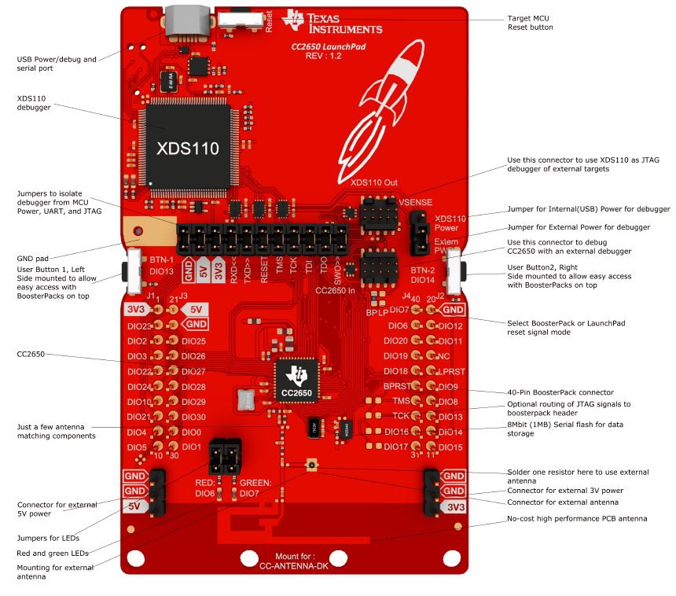
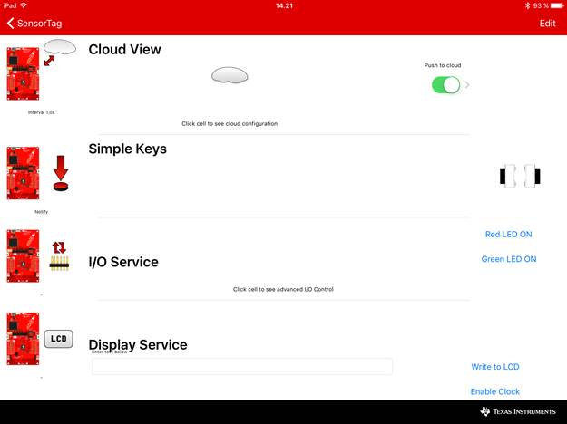

The CC2650 LaunchPad kit brings easy Bluetooth® Smart connection to the LaunchPad ecosystem with the SimpleLink ultra-low power CC26xx family of devices. This LaunchPad kit brings multi-protocol support for the CC2650 wireless MCU and the rest of CC26xx family of products: CC2630 for ZigBee®/6LoWPAN and CC2640 for Bluetooth® Smart.
The CC2650 device is a wireless MCU targeting Bluetooth Smart, ZigBee and 6LoWPAN. The CC2650 device contains a 32-bit ARM® Cortex®-M3 processor that runs at 48 MHz as the main processor and a rich peripheral feature set that includes a unique ultra-low power sensor controller. This sensor controller is ideal for interfacing external sensors and for collecting analog and digital data autonomously while the rest of the system is in sleep mode.
The CC2650 LaunchPad kit is supported by the SimpleLink Starter app for iOS and Android. This app connects your LaunchPad to your smartphone using Bluetooth Smart and lets you control from a simple and intuitive app interface. The Simplelink Starter App supports reading the LaunchPad buttons, as well as controlling LEDs and all I/O signals on the BoosterPack™ connectors. Follow the cloud view link in LaunchPad mission control to connect your LaunchPad to the cloud view supported by cloud services like IBM and Freeboard. With the cloud view you can control your LaunchPad from any web browser in minutes after setting it up.
Using the Bluetooth Smart to interface the LaunchPad kit can be upgraded to the latest firmware version with the over-the-air (OTA) upgrade from the SimpleLink Starter app.

The LaunchPad is designed to be powered from a USB-compliant power source, either a USB charger or a computer. When used this way, jumpers need to be mounted on the 3V3 position of the central jumper block. An LDO powered from the USB VBUS supply supplies 3.3V to the XDS debugger, the CC2650, and associated circuitry including the 3V3-marked pins for BoosterPacks.
The LaunchPad is designed for operation -25 to +70 C. Note that other BoosterPacks and LaunchPads may have different temperature ranges, and when combined, the combination will be set by the most restrictive combined range.
The LAUNCHXL-CC2650 is pre-programmed with software that allows wireless communication with smartphones and tablets over Bluetooth Smart. Simply connect the LAUNCHXL-CC2650 to a computer or USB power supply using the included USB cable. Please note that this is done for power supply only for the out-of-the-box experience, so please disregard any warnings about missing drivers on the PC. When power is applied, the board will run a power-on self-test, which primarily tests the serial flash. If the self-test is successful, the green LED will blink five times in rapid succession. If the test fails for any reason, the red LED will blink. After completing initialization, the green LED will blink every second as long as the device is advertising.
To test the functionality of the Out of the Box Demo, download the Simplelink Starter app from the App Store This app lets you control the LEDs, see the state of the buttons, send data to the UART and control the I/O signals on the LaunchPad headers.

Going one step further, control can also be run through the Cloud by using the Cloud view link in the app.
You click the button below to flash your Launchpad and revert back to the out of the box functionality of your Launchpad. First time use of this tool will request a plug-in installation for flashing.
Please visit CC2650 Project 0 page to be able to see a very basic project in action including ability to program your device and connect to a phone. This is the quickest way to get started and a good starting point for your application.
Please visit SimpleLink Academy for trainings on how to make your own Bluetooth Low Energy applications.
The jumper block in the middle of the board can be used to disconnect the upper section (XDS110 debugger) from the bottom section (CC2650). The jumpers are mounted by default. If you want to debug the CC2650 from an external debugger, you need to remove all the jumpers and connect the debugger to the socket marked CC2650 In.
It is also possible to use the LaunchPad to debug external targets. In this case, remove all the jumpers and connect the external target to the socket marked XDS110 Out.
The jumper block marked VSENSE can be used to select the source of power to the CC2650. Usually, power is supplied from USB and a jumper is mounted in the position marked XDS110 power (factory default). If you want to power CC2650 from an external supply, move the jumper to the position marked Extern. Pwr, and connect the external supply to the 3V3 pin on J1. Also make sure to remove the 3V3 jumper from the main jumper block. Make sure that the voltage applied stays within the supply range of the CC2650.
The text in this document pertains to LAUNCHXL-CC2650 revision 1.2 and later. For earlier revisions, there are some exceptions:
Revision 1.1 PCBs are not able to support over-the-air updates with the firmware programmed from the factory. Either use the flashing button above, or download updated firmware from http://software-dl.ti.com/lprf/launchpad/CC2650LaunchPad_BLE_All_v0_90.hex and use SmartRF Flash Programmer 2 to download it to the LaunchPad
Revision 1.1 does not have level-shifters between the XDS110 section and the CC2650, so it is not possible to operate the XDS110 and CC2650 on different voltages. Revision 1.1 therefore does not have the VSENSE power selection jumper block mentioned later, and it only has a single External Target debugging socket, which can be used if you want to use the LaunchPad to debug an external target. In all other aspects, the different revisions work identically.